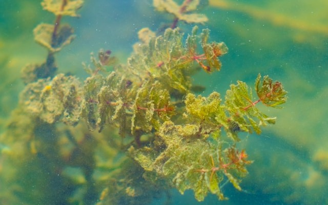
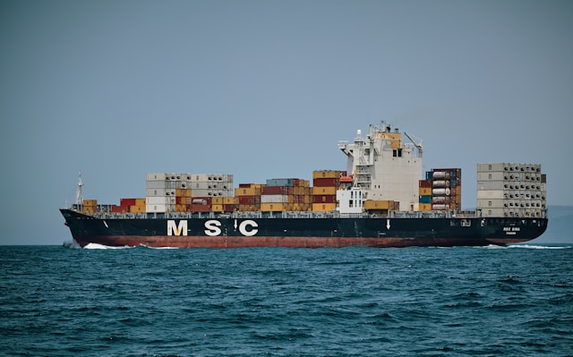
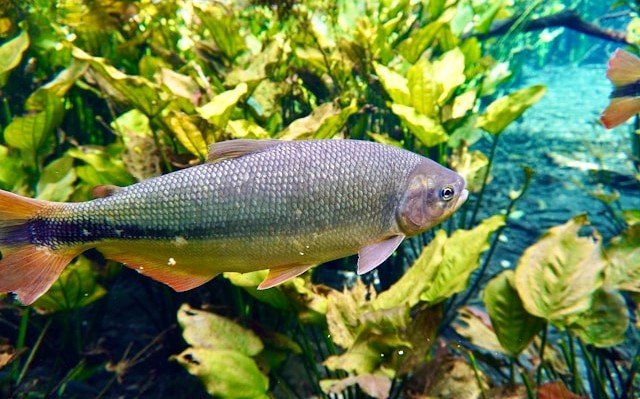

Mais Artigos

28 maio 2024
54% do oxigenio é produzido pelas algas marinhas

25 maio 2024
19% do PIB do brasil, vem da economia azul

22 maio 2024
7 Espécies de peixes raros, estão ameaçadas de extinção no Brasil, conheça.
28 maio 2024
54% do oxigenio é produzido pelas algas marinhas
25 maio 2024
19% do PIB do brasil, vem da economia azul
22 maio 2024